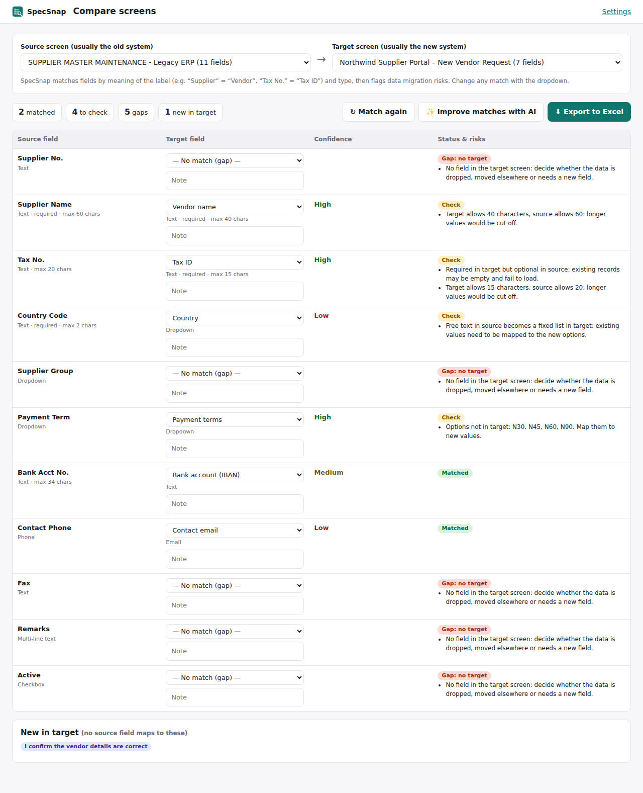

SpecSnap – Screen to Field Spec
A Chrome extension for business analysts. Scan any system screen (forms, list pages, detail pages) into a field specification (labels, types, required rules, options, limits, example values), compare the old and new version of a screen to find data migration gaps and risks, and export to Excel or a Word field specification.

Install (3 minutes)
- Download SpecSnap.zip and unzip it. You get a folder called SpecSnap.
- In Chrome, go to
chrome://extensions and turn on Developer mode (top right).
- Click Load unpacked and choose the unzipped SpecSnap folder.
- Click the puzzle icon in Chrome's toolbar and pin SpecSnap.
Try it
- Open the legacy supplier screen.
- Click the SpecSnap icon to open the side panel, click Allow website access, then Scan this page.
- Open the new vendor screen and scan it too.
- Click Compare two screens to see matched fields, gaps and migration risks.
- Export to Excel or Word.
- Also try a list and detail page.
Source code